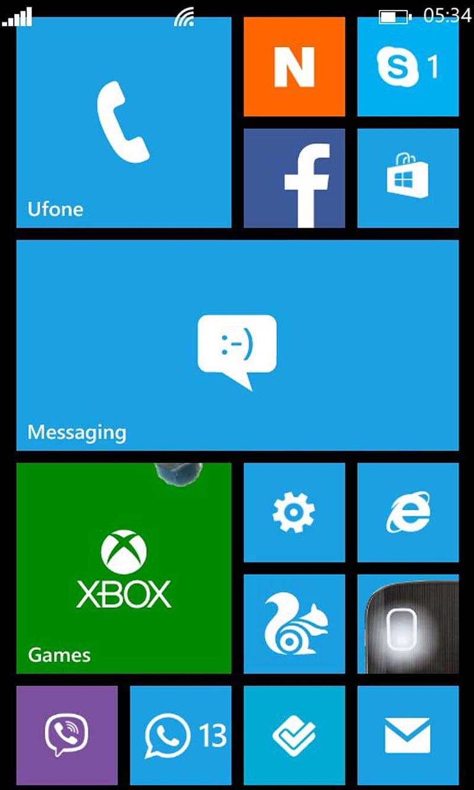

1.) iOS
iOS, an operating system from Apple, was originally developed for the iPhone. Later it was extended to support iPod Touch, iPad and Apple TV. Apple’s App Store contains more than 500,000 applications and boasts more than 25 billion downloads collectively. It holds the reputation of intelligent UI creator which is based on the concept of direct manipulation, using multi-touch gestures.
2.) Android

Android is a Linux based mobile operating system developed by the Open Handset Alliance led by Google. Android boasts large community of developers writing applications extending the functionality of the devices. It has 450,000 apps in its Android Market and download exceeds 10 billion count.
3.) Blackberry OS
Blackberry OS is developed by Research In Motion (RIM) for its line of smartphones. This operating system is known for its native support for corporate e-mail through MIDP allowing complete wireless activation and synchronization with Microsoft Exchange and Lotus Domino. Accordingly to one research approximately 45% of mobile developers were using the platform at the time of publication. It provides BlackBerry API classes for developers to write applications.
4.) Windows Phone
A Successor of Windows Mobile platform, Windows Phone, is a mobile operating system launched by Microsoft in late 2010. This mobile OS is targeted at consumer market. With this new operating system Microsoft offered a new user interface, Metro, integrating the operating system with third party and other Microsoft services, and controls the hardware on which it runs.

1.) PlayStation Gaming Platform

This platform all started with the original PlayStation. The brainchild of Sony executive Ken Kutaragi, PlayStation’s first console was born out of a joint venture between Nintendo and Sony. The two companies collaborated in 1988 to create a CD-ROM for the Super Famicom. This inspired Kutaragi to put forward the idea of a standalone product that used CDs instead of cartridges.That idea evolved into the PlayStation, which has gone on to become one of the best-selling gaming platforms ever. The first console sold 100 million units. That was quickly surpassed by the PlayStation 2, which became the most popular gaming console of all time when it sold over 155 million units. Now in its fifth incarnation, PlayStation continues to push the boundaries.
2.) Microsoft Xbox Gaming Platform
Microsoft was a relative latecomer to the gaming platform arena but it quickly made up for lost time. Xbox may not be as much of a hit as PlayStation but it’s still one of the world’s leading consoles. The first Xbox was released in 2001 and sold over 24 million units. The Xbox 360 followed in 2005 and, as of 2014, it had sold more than 84 million units.Today, the Xbox is a ninth-generation console. The Series X and Series S were both released in 2020 and cater to both ends of the market. The Xbox Series S is a lower-cost alternative to the Xbox Series X. The main differences are speed, storage, and visuals.
3.) Nintendo Gaming Platform
Nintendo has always been a major name in the industry. Its first gaming platforms, namely the NES and Super Nintendo, ushered in a revolution. Indeed, for many, it was these consoles that made video games mainstream and created a multi-billion-dollar industry. What’s interesting about Nintendo is its shift over time. From one of the main consoles for serious gamers, it’s now favored by novices and casuals.